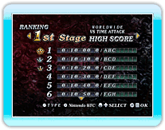

14 |
VERSUS MODE |
 |
|
In VERSUS MODE, you can face off against distant players via Nintendo Wi-Fi Connection.
Simply selecting the mode will automatically connect you to Nintendo Wi-Fi Connection.
● WORLD WIDE ● REGIONAL
● FRIEND
Once you select the type of group you wish to play with, you open the session to
participants. If nobody joins the session, the game is canceled and the connection is disconnected. While waiting for players to join, you can return to Mode Select by pressing
Once there are enough
players, the players decide the stage (majority wins). * If a vote is a draw, the rule for a session is randomly decided. * You cannot select boss stages.
Once the stage is decided, the game starts. Once a player clears the game, they can see their current Ranking.
This mode is done in Time Attack. Play until one of the players gets a specified amount of points (10 mil.)

The Result Screen lists your top 30 scores. If you achieve your top score as a result of competing with another player via Nintendo Wi-Fi
Connection, your score can be registered on Nintendo Wi-Fi Connection Ranking. When your score is registered, you can view your standing as well as those of 30 other players who are ranked near your position. |
 |
 |
 |